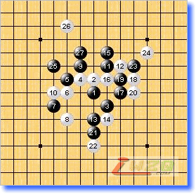
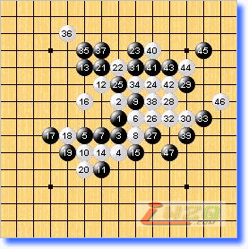
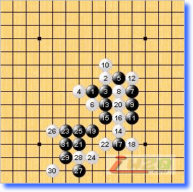
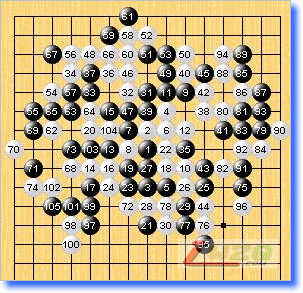
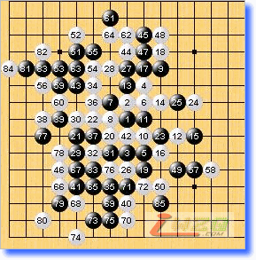

第十届世锦赛A组第十一轮略评
#1 第十届世锦赛A组第十一轮略评 作者：有志青年 发表时间：2007-8-16 9:26:48
黑方 chingin 白方 Yamaguchi 黑胜
本局似乎山口已经无心恋战，从用时上看他耗时88分钟，而Chingin用了137分钟。山口是位偏执的斗士，这点也就注定了他与中村的差距。斜月一打的这个8即便没有事先研究过，在高手的实战中执白要翻盘可能性非常小，黑棋的优势实在太大。整盘棋可以细心体会Chingin每步棋的用意，山口的防守在俄罗斯粉碎机的马达下被碾的粉碎。26在日本围棋术语叫“求投场”，棋能达意哀莫如此。

黑方 Karlsson 白方 lio 黑胜
松月的这个12，黑胜与否和黑5的位置有关系，黑5－8f的这个白12，据国内某知名棋手论证黑胜，实战的5因为盘端差异黑难胜。Karlsson对此局面的处理挺有趣味，lio的28后的招法乱下一气，47时黑上下各有胜法，白一投了事。世锦赛的漫长赛程对每位棋手的身心都是一次考验。

黑方 Purk 白方 Okabe 黑胜
考试局，黑棋教科书上的标准胜法。欧洲棋手对云雨月定式还是很熟悉的，记得98年去北京参赛时就听说俄罗斯的很多棋手入门常选云雨月。

黑方 Taimla 白方 Kozhin 和棋
对付Kozhin的确让人头痛，就像经纬杯上碰到三森先生一样，总是会出些历史悠久的考题。本局黑方的定式出错（好像俄罗斯定式书上就是实战的这步21，那本书的作者应该是Kozhin吧），实战的22唯一防！21－28是正招，这步棋记得还是2000年老于告诉我的。日前老于喜得千金这里要恭喜他！

黑方 Oll 白方 Savrasova 和棋
此局虽然一度白棋似乎危险，但46要点防后双方已无胜机。Oll此次世锦赛发挥的不好，与赛前的期望差距很大，他应该是位很有潜力的棋手。期待下届能再次看到他。

世锦赛到今天结束了，目前还没有仇云飞在B组的消息，希望他能获得好成绩。
我一年多没有碰过棋盘棋子了，本来已经逐渐远离五子棋，没想到这次世锦赛还是被拉了回来，并且絮絮叨叨写了这些点评，鉴于本人水平粗浅，错漏之处很多。希望大家海涵并多多批评指正。